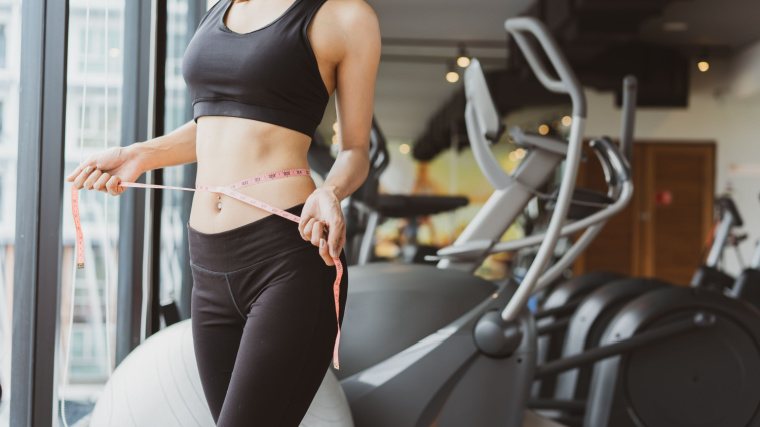

BMR Calculator
Use this calculator to determine your Basal Metabolic Rate (BMR) and daily calorie needs based on your activity level.

Use this calculator to determine your Basal Metabolic Rate (BMR) and daily calorie needs based on your activity level.